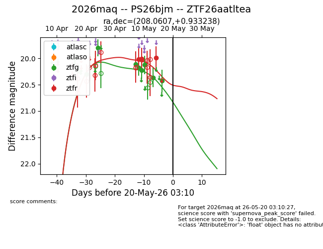
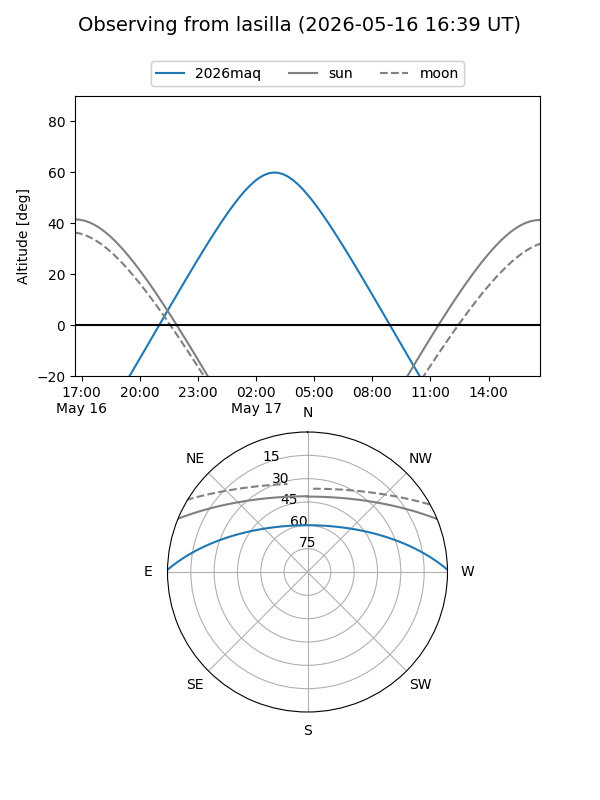
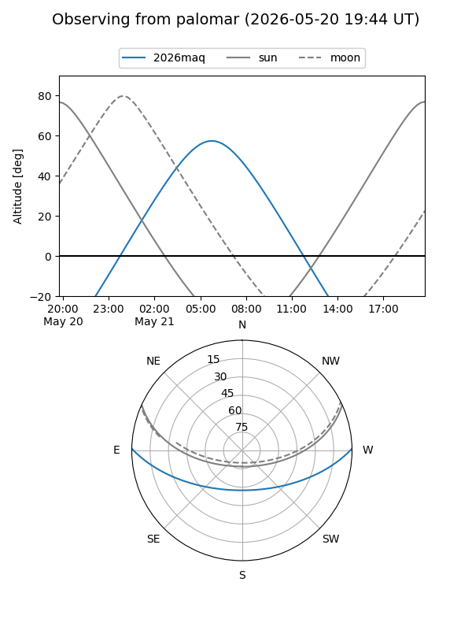
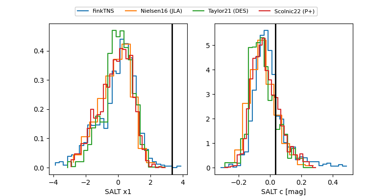

2026maq
Target 2026maq at 2026-05-20 03:12
Aliases and brokers:
FINK: link
Lasair: link
ALeRCE: link
TNS: link
YSE: link
alt names
ZTF26aatltea (ztf,fink_ztf)
2026maq (tns,yse)
PS26bjm (panstarrs)
Coordinates:
equatorial (ra, dec) = 208.0607,+0.93324
equatorial (HMS+DMS) = 13:52:14.57,+00:55:59.66
galactic (l, b) = (334.5730,+60.01554)
Flags:
Photometry:
last ztfg=20.43, ztfr=19.99
8 ztfg, 3 ztfr detections
Lightcurve

Visibility


Additional plots
